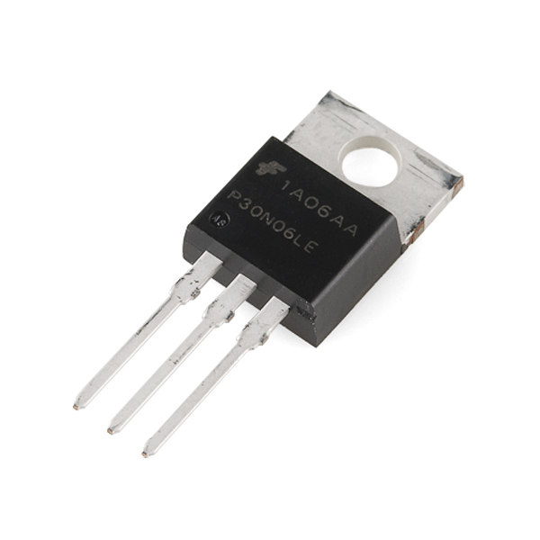
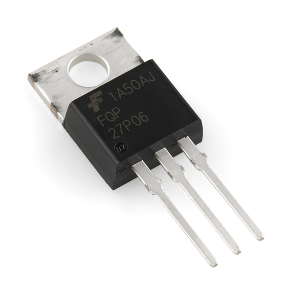
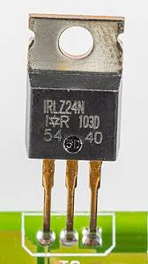
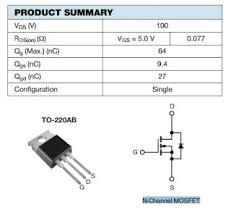
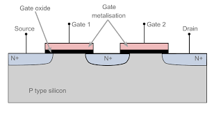
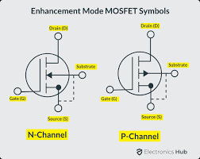

Different Types of MOSFETs
Click on each type to learn more:
| Enhancement Mode MOSFETs | Depletion Mode MOSFETs | Power MOSFETs | Logic Level MOSFETs | Dual-Gate MOSFETs | VMOS, UMOS, TMOS, Trench MOSFETs |
|---|---|---|---|---|---|
|  |  |  |  |  |  |
| Enhancement Mode MOSFETs | Depletion Mode MOSFETs | Power MOSFETs | Logic Level MOSFETs | Dual-Gate MOSFETs | VMOS, UMOS, TMOS, Trench MOSFETs |
Enhancement Mode MOSFETs
Enhancement Mode MOSFETs remain off until a voltage is applied to the gate. They're widely used for switching and amplification.
Depletion Mode MOSFETs
Depletion Mode MOSFETs are normally on but turn off when voltage is applied to the gate. They are less common than enhancement types.
Power MOSFETs
Power MOSFETs are designed to handle large currents and voltages, making them suitable for high-power applications.
Logic Level MOSFETs
Logic Level MOSFETs can be driven directly by digital logic circuits because they have low gate voltages.
Dual-Gate MOSFETs
Dual-Gate MOSFETs have two gates, which allows for more control and versatility in circuit design.
VMOS, UMOS, TMOS, Trench MOSFETs
These MOSFETs have specialized structures and are optimized for specific applications like high-speed switching and power efficiency.